Question: across several comparisons, how many genes change, which genes change where, and do two comparisons agree?
| Function | Shows | Best for |
|---|---|---|
plot_multi_volcano() |
the genes of each comparison, one column each | the size and shape of each response |
plot_de_dots() |
chosen genes × comparisons: fold change and significance | specific genes across comparisons |
plot_fc_quadrant() |
fold changes of one comparison against another | whether two responses agree |
All three read their input with standardize_de() (see DE: one comparison): a named
list of DE tables (names are the comparisons), or one long
table with a comparison column (comparison.col,
e.g. "cluster" for
Seurat::FindAllMarkers()).
As in the single-cell plots, the comparisons play the part of
group.by (the units compared, marked by their colour) and
the optional groups of comparisons (e.g. a lineage above
its cell types) that of split.by: blocks marked by a bar
and a name, black by default (groups.cols), opposite the
comparison names (groups.side).
Data: interferon-β (IFN-β) vs control in each cell type of the PBMCs of Kang et al. 2018: counts summed per donor, condition and cell type (pseudobulk), edgeR quasi-likelihood test paired by donor, for the 6 cell types with at least 10 cells in every sample. Testing samples rather than cells avoids the inflated p-values of per-cell tests, which treat cells as replicates.
de <- docs_kang_de()
names(de)
#> [1] "CD4 T" "CD8 T" "NK" "B" "CD14 Mono"
#> [6] "FCGR3A Mono"
# DE genes per cell type
vapply(de, function(t) sum(t$FDR < 0.05), integer(1))
#> CD4 T CD8 T NK B CD14 Mono FCGR3A Mono
#> 1392 228 461 565 2510 1057Multi-comparison volcano
One column per comparison, marked by a strip of its colour and its
name on top: genes at their log2 fold change, the up- and down-regulated
ones each spread by their density, so the shape of each response shows;
the non-significant genes spread evenly in light grey behind them; the
cutoffs (±logfc.cutoff, default 1) as dashed lines; counts
of up- and down-regulated genes above and below.
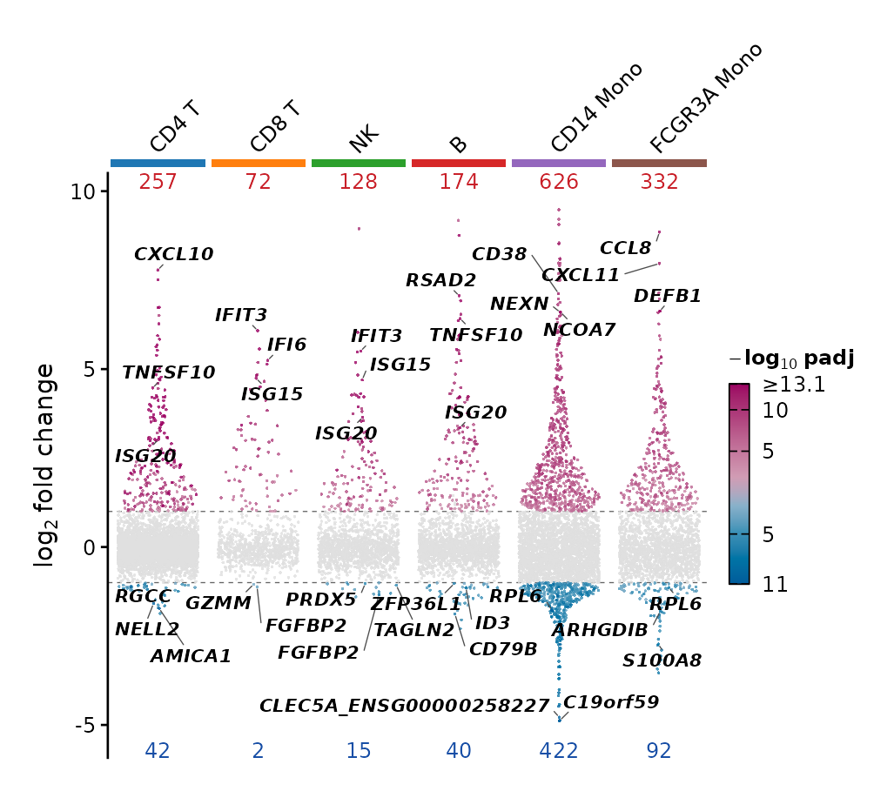
CD14 monocytes respond with the most genes; the top genes of every cell type include interferon-stimulated genes. Colour is the −log10 adjusted p-value (warm for up, cool for down), saturating at the 95th percentile of the DE genes; each side of the colour bar ends at its own most significant gene, so the direction with weaker p-values is not faded.
Variants
A second level: comparisons of a group are drawn together, the group
marked by a bar and its name at the bottom
(groups.side = "labels" puts it at the top, beyond the
comparison names).
lineage <- c(
"CD4 T" = "Lymphoid",
"CD8 T" = "Lymphoid",
"NK" = "Lymphoid",
"B" = "Lymphoid",
"CD14 Mono" = "Myeloid",
"FCGR3A Mono" = "Myeloid"
)
plot_multi_volcano(de, groups = lineage)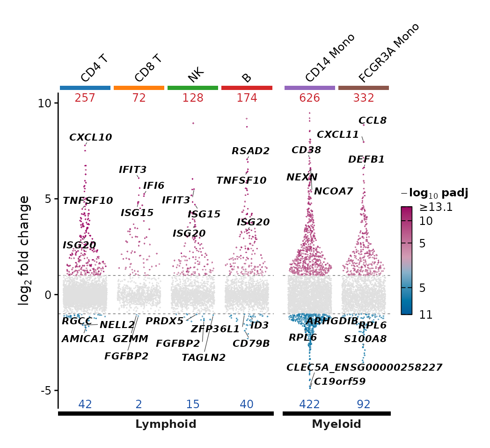
Comparisons as rows: down-regulated genes on the left, up-regulated
on the right, the comparison names and strips on the left.
comparison.cols takes a palette name, or colours named by
comparison (e.g. the cell type colours of the embedding plots):
plot_multi_volcano(
de,
flip = TRUE,
groups = lineage,
comparison.cols = "okabe-ito",
label.n = 2
)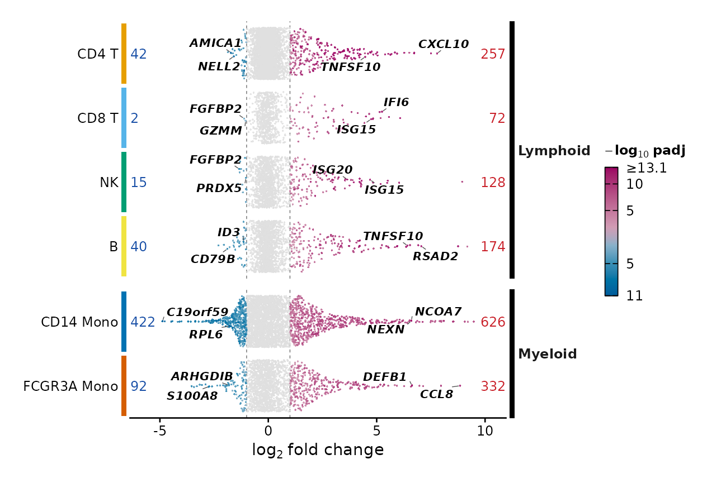
"pvalue" places genes across their column by −log10
adjusted p-value, relative to the most significant gene on their side of
0 (each column is a sideways volcano). It suits bulk results, where
thousands of non-significant genes would fill the column with grey in
the default layout; "jitter" spreads all genes
uniformly.
plot_multi_volcano(de, layout = "pvalue")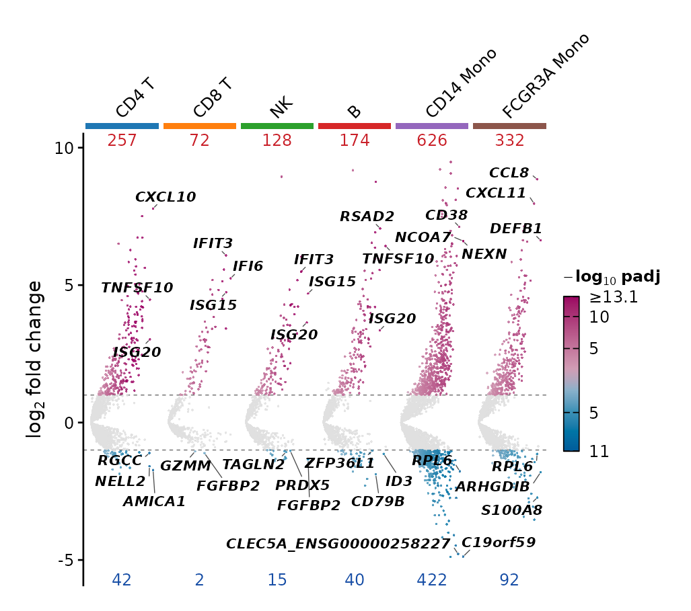
"sharing" colours genes by the number of comparisons
they are DE in: responses shared by all cell types versus specific to
one. "direction" uses one colour per direction.
plot_multi_volcano(de, color.by = "sharing", label = "none")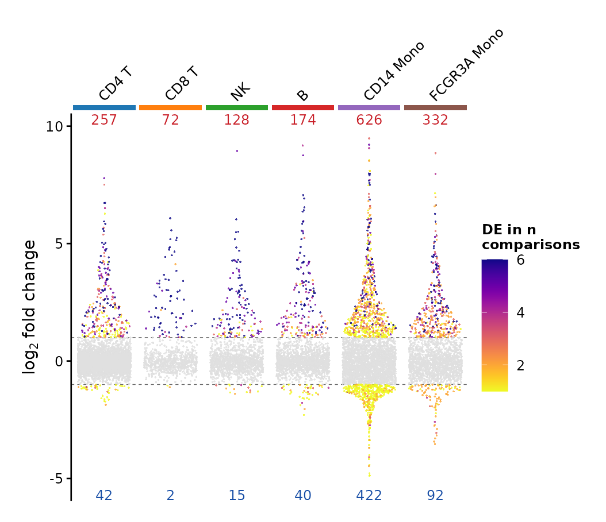
"n_de" puts the comparisons with the most DE genes
first; "cluster" groups comparisons with similar
fold-change profiles.
plot_multi_volcano(de, order = "cluster", label.n = 2)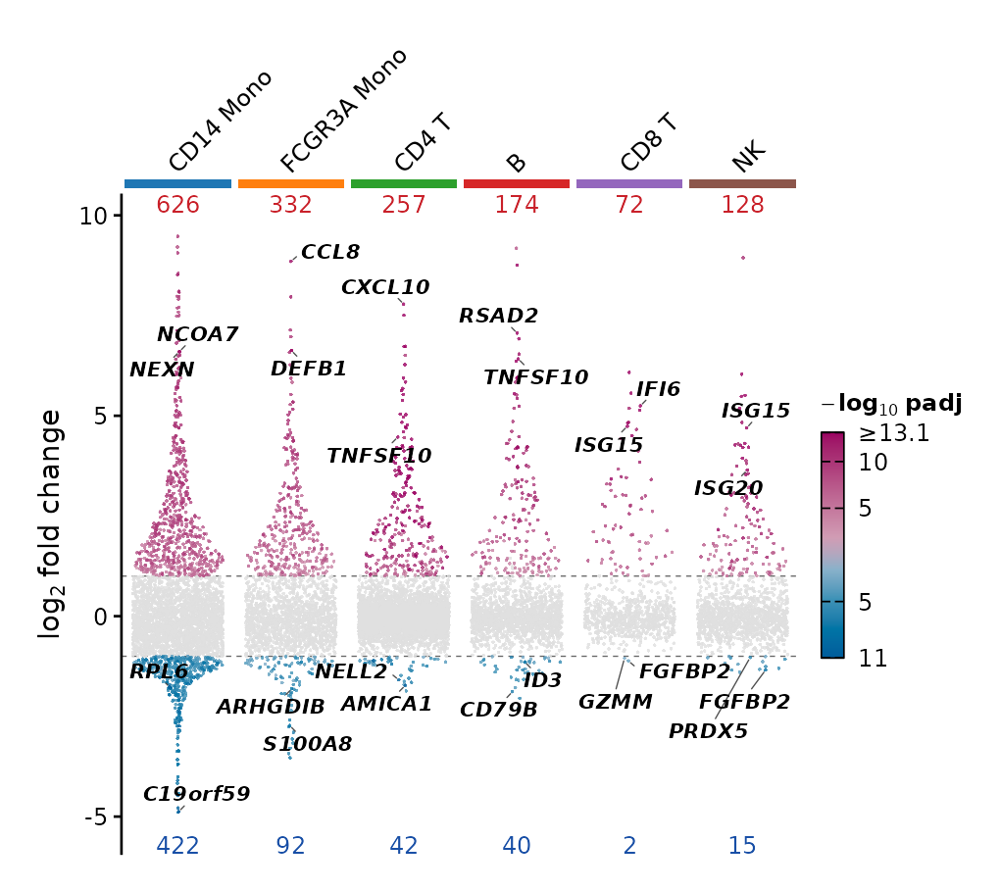
A lower logfc.cutoff, and only the DE genes
(show.ns = FALSE):
plot_multi_volcano(
de,
show.ns = FALSE,
logfc.cutoff = 0.5,
label = "none"
)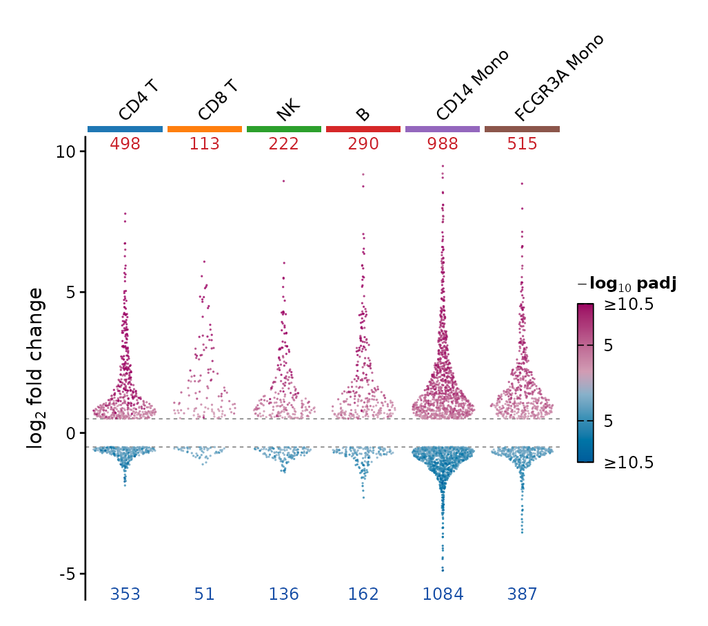
DE dot plot
Chosen genes across comparisons: colour is the log2 fold change, size
the −log10 adjusted p-value, and non-significant results are faded. Each
comparison is marked by a coloured dot, as the groups of the single-cell
dot plot (comparison.marker = "dot", "strip"
or "none"). Without features, the top
n genes of each comparison:
plot_de_dots(de, n = 3)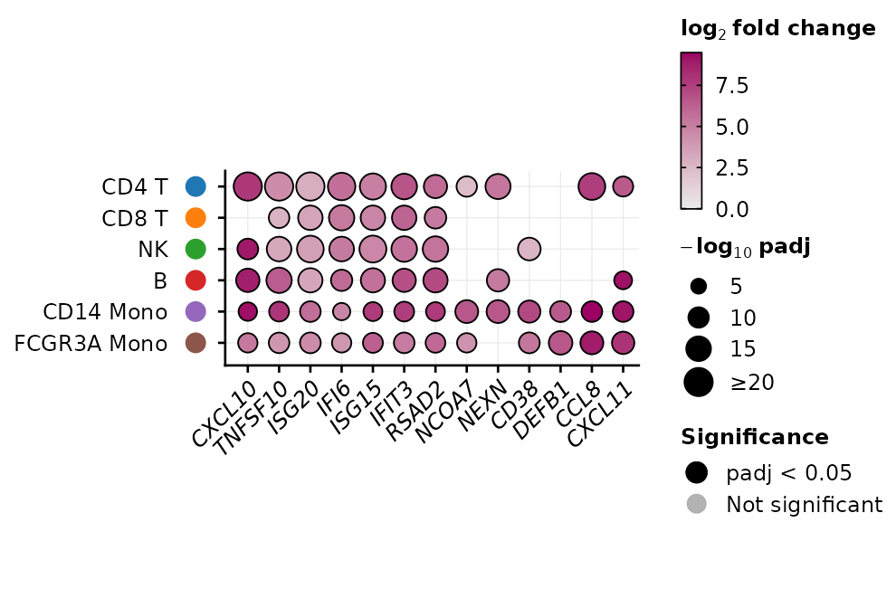
The colour scale is centred on 0 and runs from the most negative to
the most positive fold change of the significant dots, each side to its
own full colour; give logfc.limits to share one scale
between figures.
Variants
A named list of genes draws groups of columns, marked by bars on top
(coloured with feature.group.cols):
genes <- list(
"Interferon-stimulated" = c("ISG15", "IFI6", "IFIT1", "IFIT3", "MX1", "OAS1"),
"Chemokines" = c("CXCL10", "CCL2", "CCL8")
)
plot_de_dots(de, features = genes)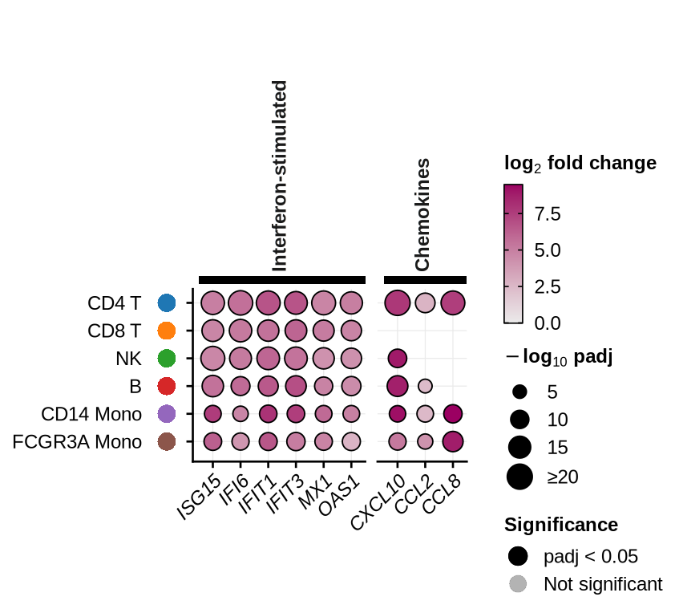
"grey" draws non-significant results grey;
"hide" leaves them out:
plot_de_dots(de, features = genes, significance = "grey")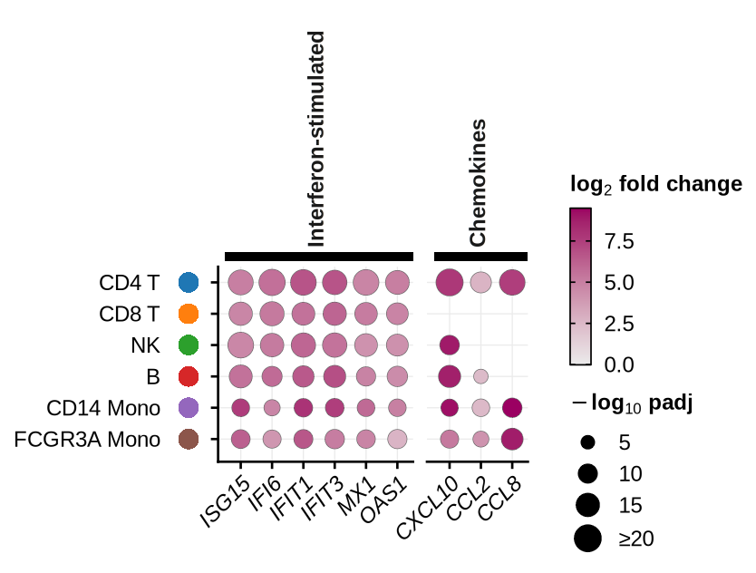
Genes and comparisons ordered by clustering of their fold changes; genes as rows, comparisons as columns marked by colour strips:
plot_de_dots(
de,
n = 4,
cluster.features = TRUE,
cluster.comparisons = TRUE,
flip = TRUE,
comparison.marker = "strip"
)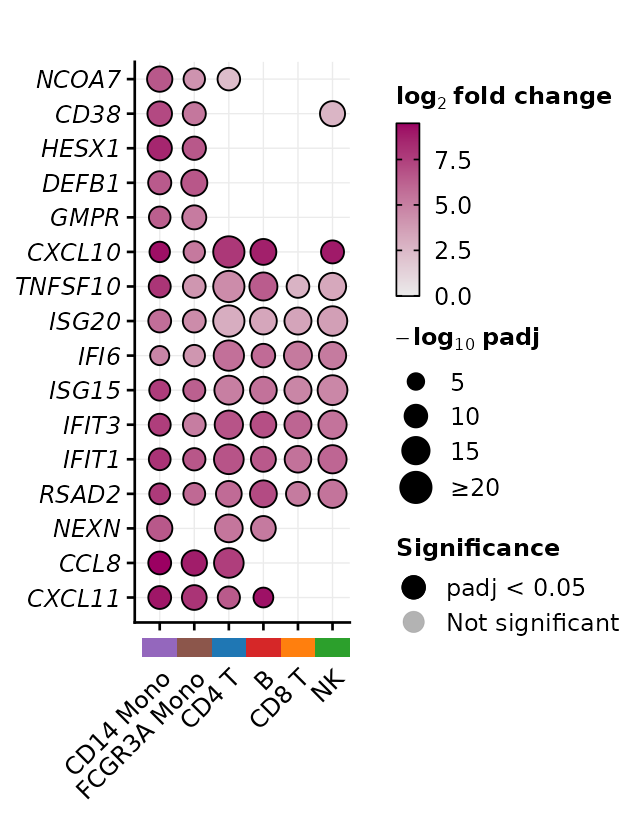
Comparisons in groups of rows, each marked by a bar and its name (here in colour, beyond the comparison names):
plot_de_dots(
de,
features = genes,
groups = lineage,
groups.cols = c(Lymphoid = "#2C5DA8", Myeloid = "#B5338A"),
groups.side = "labels"
)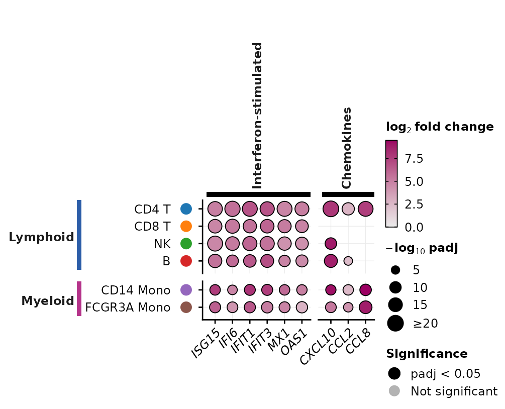
Quadrant plot
The fold changes of two comparisons against each other. Genes significant in both are coloured by whether they change the same way: consistently up, consistently down, or in opposite directions (inconsistent); all others are grey. Counts of these genes in each quadrant, and the correlation of the fold changes above the panel. Do monocytes and B cells respond to IFN-β with the same genes?
plot_fc_quadrant(
de[["CD14 Mono"]],
de[["B"]],
name.x = "CD14 Mono",
name.y = "B",
label.n = 3
)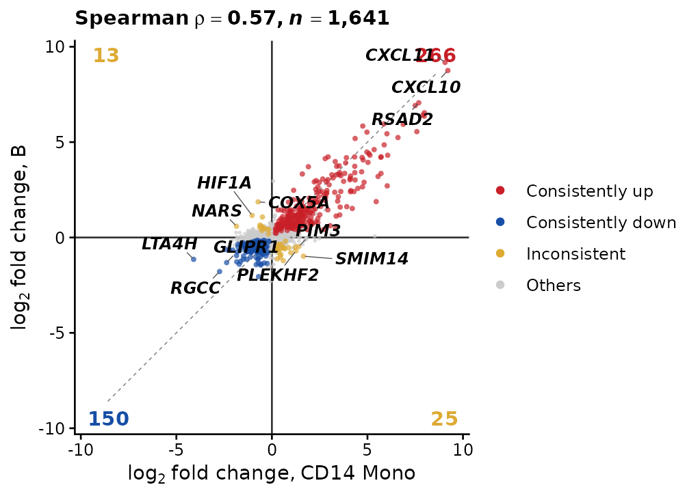
Most genes changed in both change in the same direction (top-right and bottom-left), and B cells respond to fewer genes, more weakly (the cloud lies below the diagonal on the right). “Consistent” needs significance in both comparisons: a gene significant in one only is among the others, whatever its sign in the other.
Variants
color.by = "direction" keeps only the consistent genes
in colour (genes changed in opposite directions join the others, and
only the top-right and bottom-left are counted).
color.by = "significance" colours where each gene is
significant: in both (same or opposite direction), in one only, or in
neither.
plot_fc_quadrant(
de[["CD14 Mono"]],
de[["B"]],
name.x = "CD14 Mono",
name.y = "B",
color.by = "direction",
label = "none"
)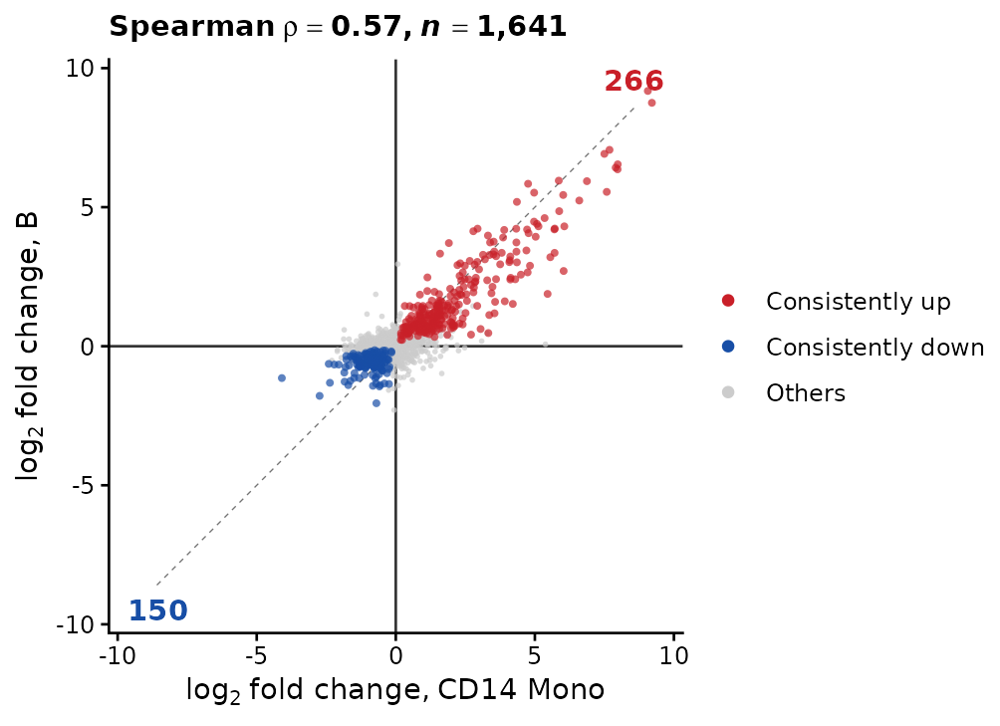
plot_fc_quadrant(
de[["CD14 Mono"]],
de[["B"]],
name.x = "CD14 Mono",
name.y = "B",
color.by = "significance",
label = "none"
)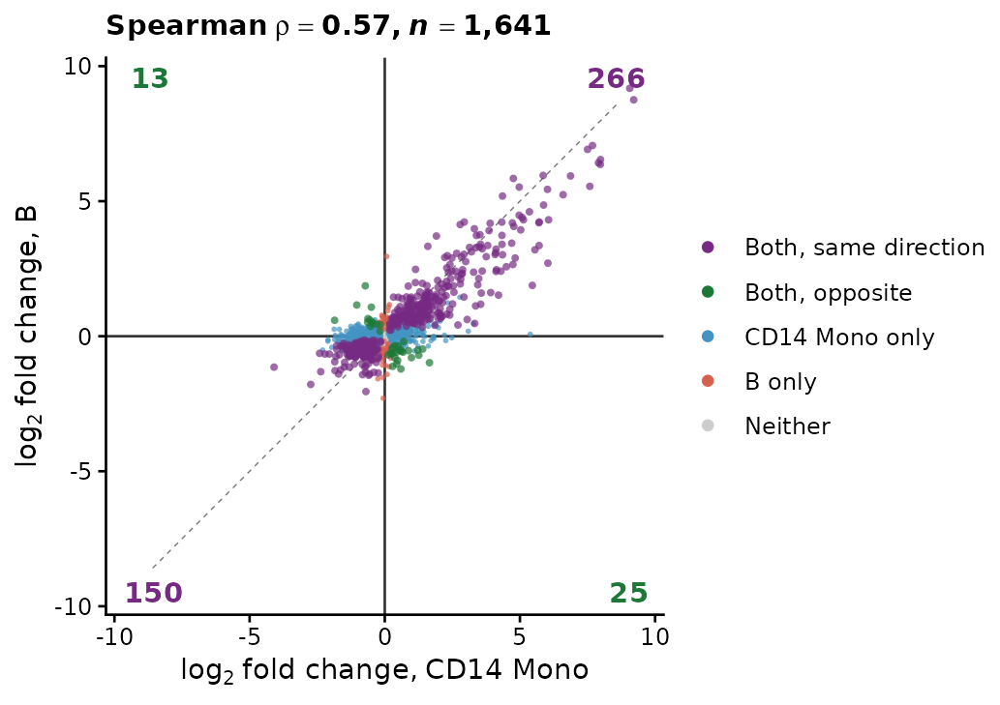
A least-squares line of y on x, fitted on the genes of the
correlation (cor.on), with a 95% band
(trend.interval): “confidence” (default) shows where the
fitted line lies, as geom_smooth(method = "lm") draws it,
and is very narrow with many genes; “prediction” shows where 95% of the
genes are expected to fall around the line. Both fold changes are noisy
estimates, which biases a least-squares slope toward 0 (regression
dilution): the line shows the trend, but its slope is not the ratio of
the two responses.
plot_fc_quadrant(
de[["CD14 Mono"]],
de[["B"]],
name.x = "CD14 Mono",
name.y = "B",
cor.on = "significant",
trend = TRUE,
trend.interval = "prediction",
label = "none"
)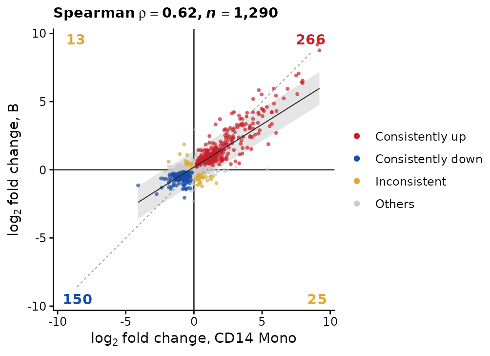
The comparisons can come from different experiments, tools or
designs. Here, macrophages (Alasoo et al. 2018)
stimulated with IFN-γ or infected with Salmonella, each against
naive, paired by donor. Fold change cutoffs are set per comparison
(logfc.cutoff.x, logfc.cutoff.y; likewise
padj.cutoff.x, padj.cutoff.y) and drawn as
thin dashed lines:
mac <- docs_macrophage()
counts <- filter_low_expression_genes(mac$counts, min_group_size = 6)
y <- edgeR::normLibSizes(edgeR::DGEList(counts))
design <- model.matrix(~ donor + condition, data = mac$samples)
fit <- edgeR::glmQLFit(y, design)
test_ifng <- edgeR::glmQLFTest(fit, coef = "conditionIFNg")
test_sl1344 <- edgeR::glmQLFTest(fit, coef = "conditionSL1344")
de_ifng <- edgeR::topTags(test_ifng, n = Inf)
de_sl1344 <- edgeR::topTags(test_sl1344, n = Inf)
plot_fc_quadrant(
de_ifng,
de_sl1344,
name.x = "IFN-γ",
name.y = "Salmonella",
logfc.cutoff.x = 1,
logfc.cutoff.y = 1
)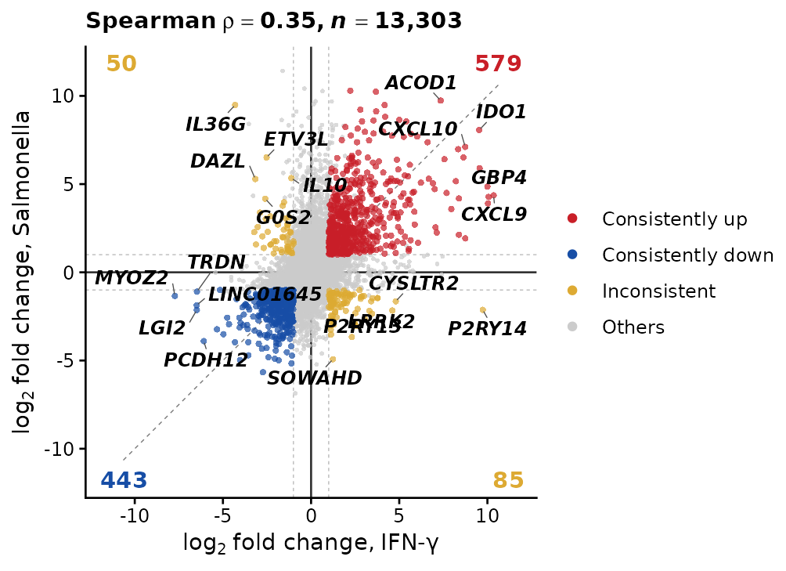
With color.by = "significance", colour only genes
significant in both; correlation of the genes significant in either
comparison:
plot_fc_quadrant(
de[["CD14 Mono"]],
de[["CD4 T"]],
name.x = "CD14 Mono",
name.y = "CD4 T",
color.by = "significance",
categories = "both",
cor.on = "significant",
correlation = "pearson"
)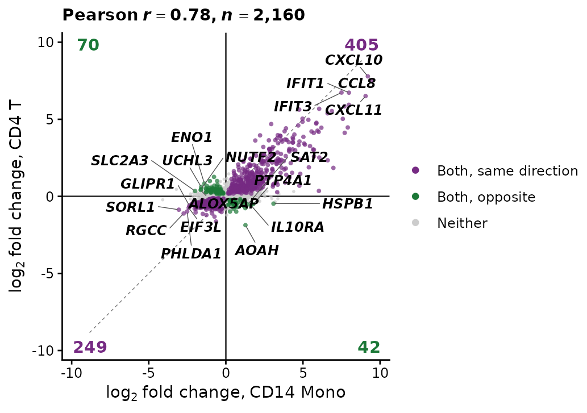
plot_fc_quadrant(
de[["CD14 Mono"]],
de[["B"]],
name.x = "CD14 Mono",
name.y = "B",
label = "selected",
label.features = c("ISG15", "CXCL10", "IFIT1", "MX1")
)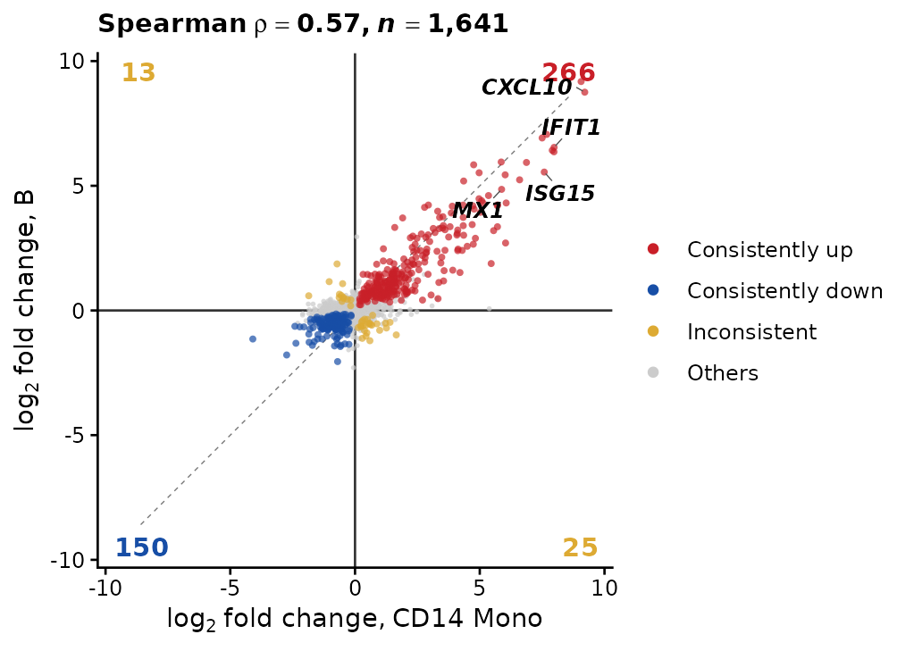
To compare RNA with chromatin (ATAC, ChIP, CUT&RUN), map the
peaks of de.y to genes with map.y (e.g. from a
ChIPseeker annotation); with several peaks per gene, the most
significant one is used (map.summary). The peak table below
is simulated from the monocyte RNA fold changes, only
to show the input format:
rna <- de[["CD14 Mono"]]
set.seed(1)
genes_with_peaks <- sample(rownames(rna), 3000)
n_peaks <- sample(1:3, length(genes_with_peaks), replace = TRUE)
peak_gene <- rep(genes_with_peaks, n_peaks)
peak_logfc <- 0.5 * rna[peak_gene, "logFC"] + rnorm(length(peak_gene), sd = 0.6)
peaks <- data.frame(
logFC = peak_logfc,
row.names = paste0("peak_", seq_along(peak_gene))
)
peaks$PValue <- 2 * pnorm(-abs(peaks$logFC) / 0.4)
peaks$FDR <- p.adjust(peaks$PValue, "BH")
peak_to_gene <- data.frame(peak = rownames(peaks), gene = peak_gene)
head(peak_to_gene, 3)
#> peak gene
#> 1 peak_1 CYB561D2
#> 2 peak_2 PLEKHF2
#> 3 peak_3 PLEKHF2
plot_fc_quadrant(
rna,
peaks,
name.x = "RNA",
name.y = "ATAC (simulated)",
map.y = peak_to_gene
)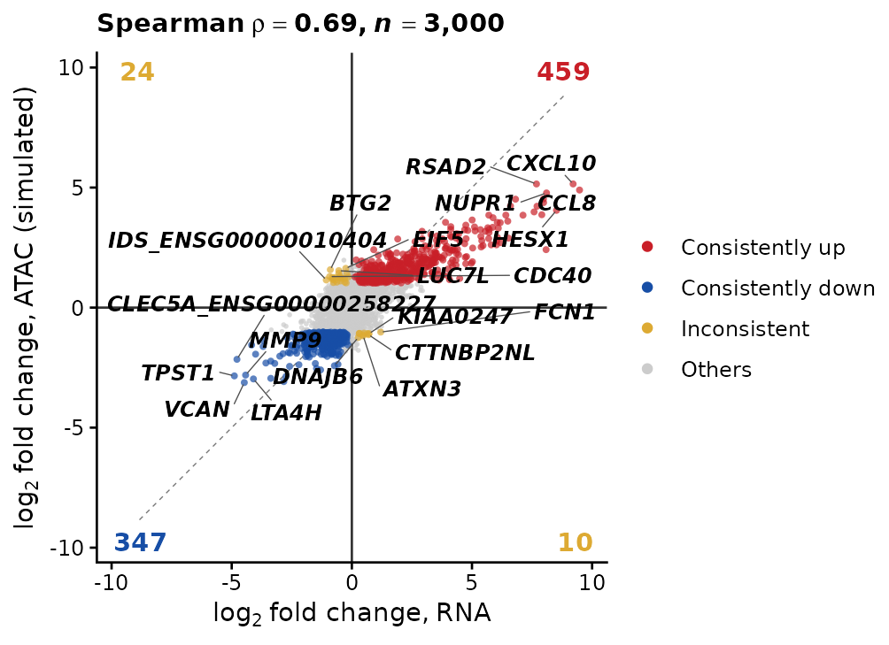